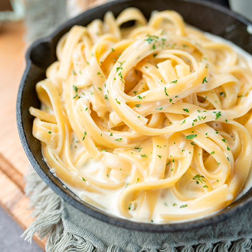

World's Best Fettuccine Alfredo

Authentic Italian dish with Cooking Italian Joe
Learn Joe Boria's secret recipe to the world's best
Fettuccine Alfredo dish originated from his family and
inspired from his family stories and Italian culture
Joe's Tutorial Video
Recipes
- 1/4 cup minced onions
- 2 cloves garlic, diced
- 1 stick (8 tbsp.) butter
- pinch of nutmeg
- 1/3 cup white wine
- 2 cups heavy cream
- 1 lb. dried Fettuccine pasta
- 2 egg yolks, whisked
- 1/2 cup shredded Parmesan
- 1/2 cup Romano cheese
- salt & pepper
- Olive Oil
Steps
- In a large pot, bring salted water to a boil.
- Coat the bottom of a large pan with olive Oil
and add heat on low heat. Add garlic and onions,
cooking until softened and slightly browned.
- Add the butter and melt down. Add fresh cracked
pepper and 1/2 tsp of salt and mix. Add a pinch
of nutmeg and continue mixing.
- Add white wine and mix for 1 to 2 minutes. Slowly
mix in heavy cream.
- While your sauce simmers, add the fettuccine to
your boiling water and cook until al dente
according to the instructions for your pasta.
- Slowly stir egg yolks in your sauce and stir into
the sauce and heat until the sauce is bubbling
stirring occasionally.
- Mix in Parmesan and Romano cheese until they're melted
and sauce is creamy. Add a splash of pasta water
if the sauce is too thick for your liking.
- Strain your pasta or and add into the pan with
your sauce, or transfer directly from the pot to
the pan with a pasta fork or tongs. Stir together
so pasta is fully covered in sauce.
- Remove from the heat and place in a serving bowl.
Top with shredded and cheese and parsley. Enjoy!
Odin Recipes